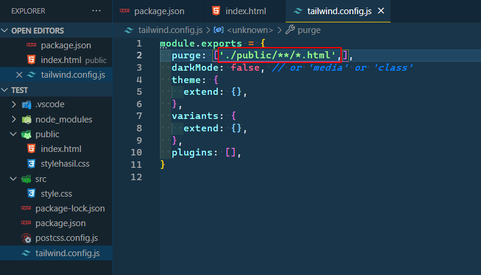
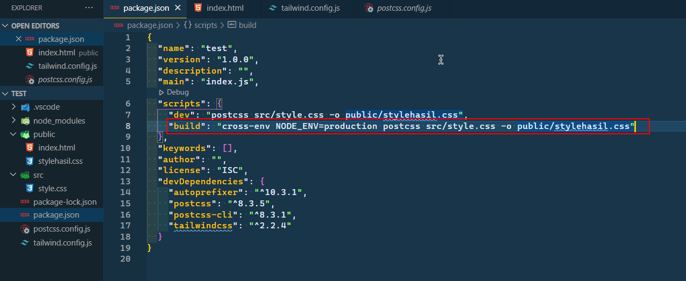
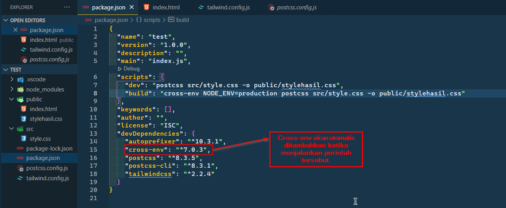

Purging Tailwind CSS
Senin, 12 Juli 2021
Intro
Artikel ini gua buat sebagai catatan dan reminder gua dikemudian hari, dan juga sharing kepada teman - teman.
Apa itu Purge ?
Dalam proses development website, ukuran file yang dihasilkan tidak akan menjadi masalah karena semua dijalankan pada server lokal. Namun dalam proses produksi, ukuran file yang besar akan menjadi masalah serius karena akan sangat menghambat performa website, dimana ketika pengguna mengakses website kita (prosed GET) akan memerlukan banya bandwitdth sehingga akan memperlambat.
Taiwindcss akan mengcompile semua style yang ada baik yang kita pakai maupun tidak ke dalam file hasil compile dan akan menghasilkan file CSS yang sangat besar. Untuk itu diperlukanlah proses purge, dimana akan mengcompile style yang kita gunakan saja. Sehingga hasil akhir akan jaul lebih kecil ukurannya.
Gimana caranya ?
Kita perlu menambahkan file yang akan kita purge di dalam file tailwind.config.js
purge: ['./public/**/*.html',],

Itu berarti tailwind akan menyesuaikan style apa saja yang digunakan file html di folder public. Sehingga style yang tidak digunakan akan dihapus dari file hasil "compile"
Kemudian Kita juga perlu menambahkan script di dalam file package.json
"build": "cross-env NODE_ENV=production postcss src/style.css -o public/stylehasil.css"

Sebelum menjalankan perintah build di terminal, Kita perlu instal yang namanya cross-env dengan menjalankan perintah
npm install --save-dev cross-env

Setelah itu, barulah kita bisa menjalankan perintah
npm run build